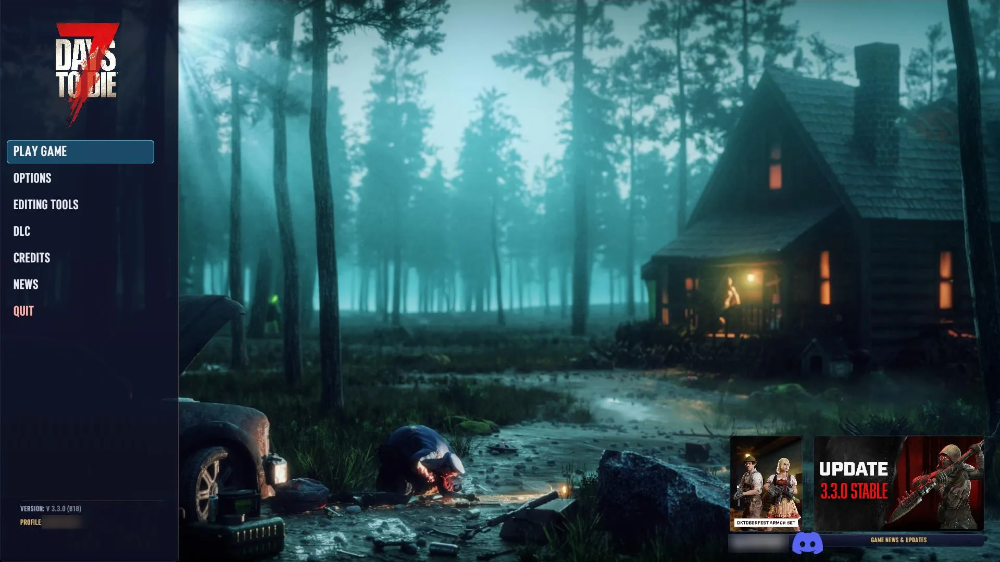
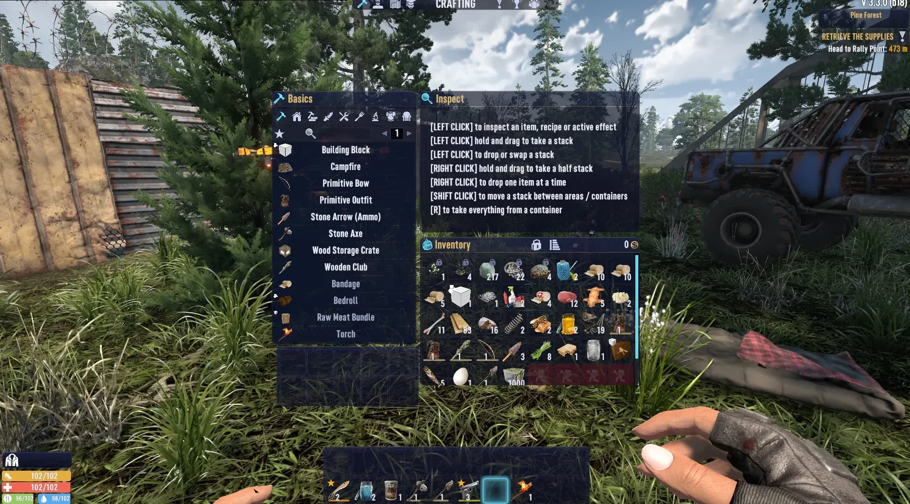
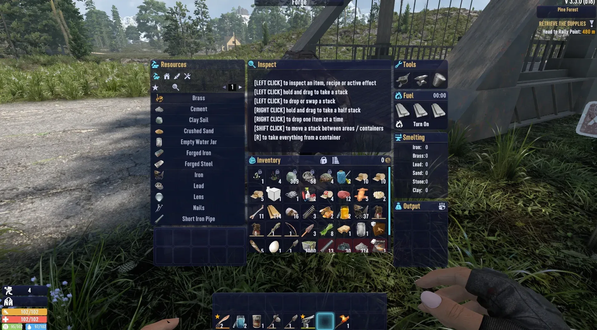

Your mod, in fox-fire glass.
A few lines of XML and your windows match the KitsuneUI theme, follow each player's colours, and join Move HUD. Without KitsuneUI, nothing changes.
Three steps, one file
Everything goes inside a mod_loaded check. That one rule keeps your mod safe for players without KitsuneUI.
<conditional> <if cond="mod_loaded('KitsuneUI')"> <!-- steps 2 and 3 --> </if> </conditional>
Put the glass body behind your window and make the old grey background transparent.
<prepend xpath="/windows/window[@name='myWindow']"> <ku_window_body /> </prepend>
Titles in gold, highlights in fox-fire. They follow the player's colour preset.
<setattribute xpath="...//label[@name='value']" name="color">[kuGold]</setattribute>
Same window, two players
Everything sits inside a mod_loaded check, so the player with KitsuneUI gets the glass and the player without it gets your window as you shipped it. Nobody gets a broken one.
The kit
Colours
Fox-fire, gold, text, edges, buttons and stat colours that follow each player's preset.
Sprites
Glass panels, rounded cells, slots, bars and glows, already in the game's UI atlas.
Building blocks
A window body, section titles, rows and toggles. One line each.
Move HUD
Let players drag, resize and hide your HUD pieces, saved in their layouts.


One handle. Players do the rest.
Drop a ku_move_handle in your HUD window and players can drag it, resize it, hide it and save it in their layouts. It stays on screen and resets with everything else.
<ku_move_handle pos="0,0" width="320" height="48" label_key="myHudStripName" />